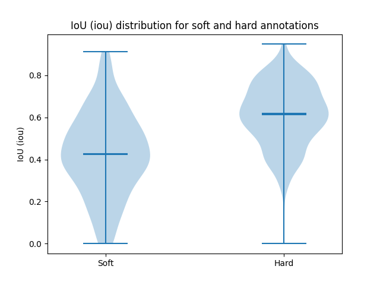
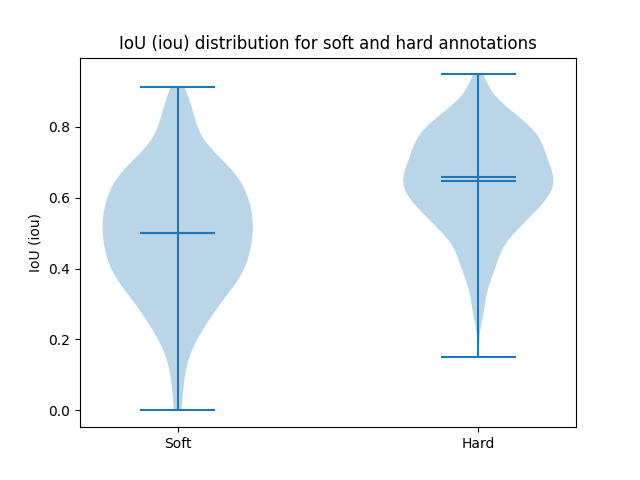
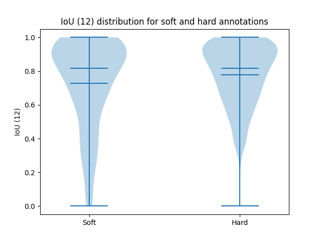
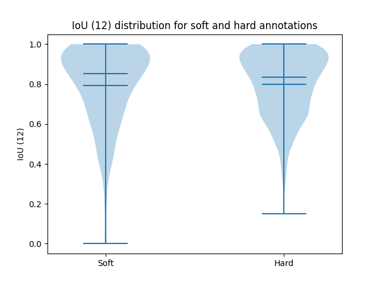
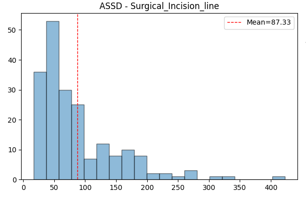
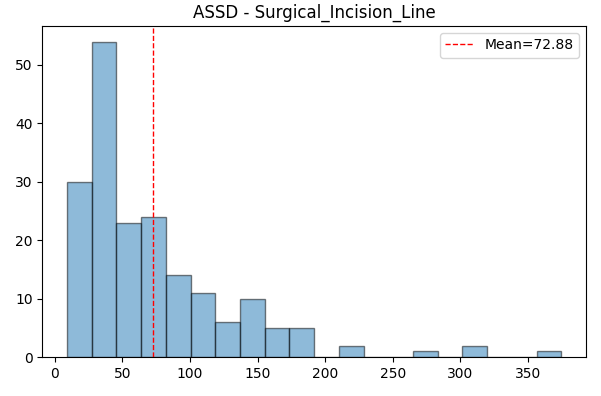
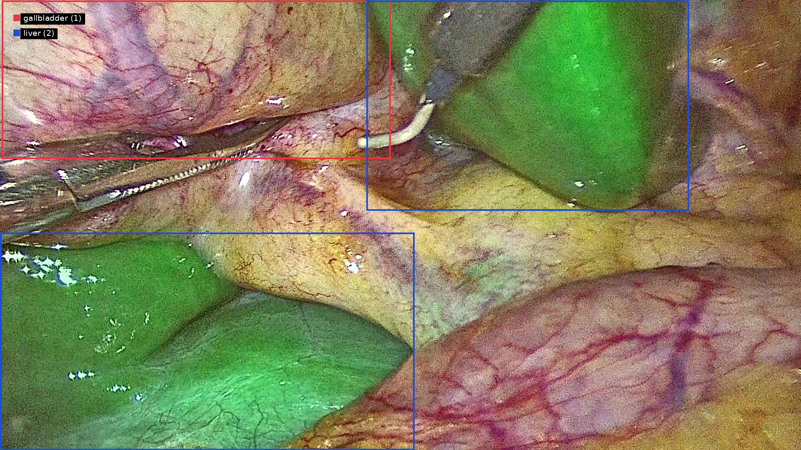
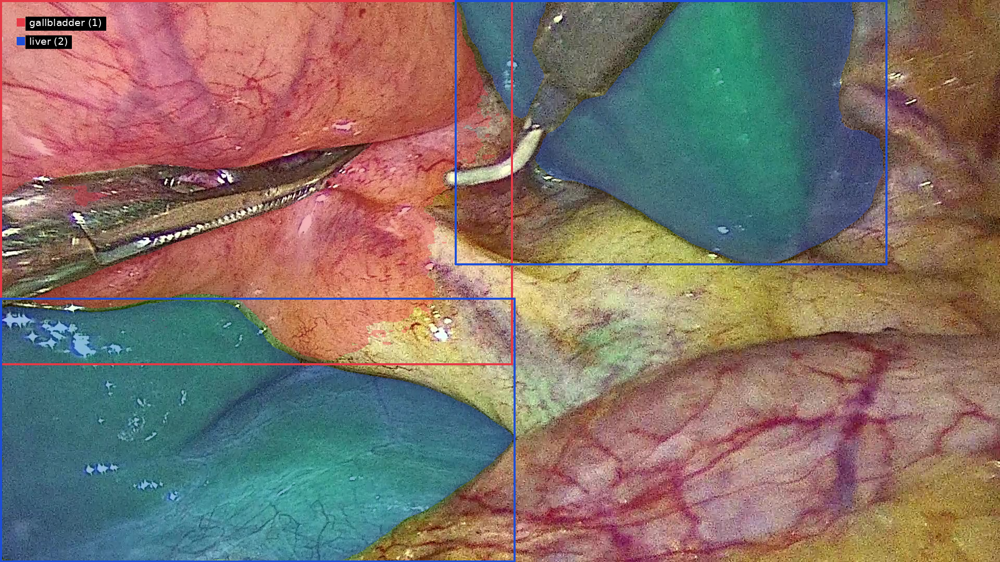
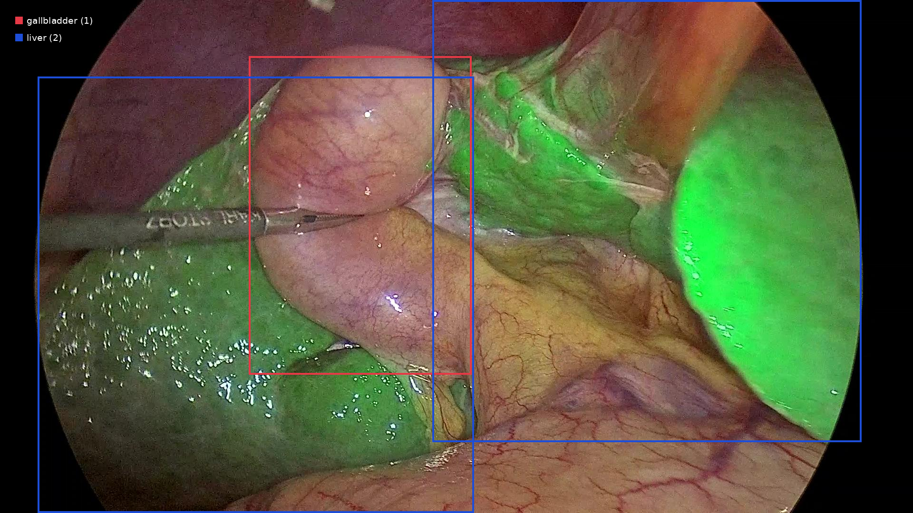
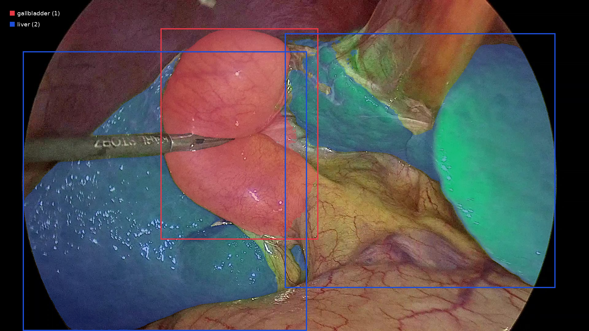

Meeting CAMMA 2026.03.21
Luc / Shih-Min / Pietro / Nicolas
Agenda
- New annotator's concordance
- Endoscapes
- First stage of pipeline
- Some tooling
New annotator's concordance
CBD Bounding Boxes


New annotator's concordance
CBD Bounding Boxes


New annotator's concordance
Lines


New annotator's concordance

Endoscapes
Private version - Seg201
- Re-encoded
- Match and rescale annotations
- Clip out out-of-body frames
- Upload everything to MOSaiC
Planning
Not so time dependent
Very time dependent
Not so time dependent
Not so time dependent
- Detect anatomical structures
- Easy ones (Liver, Gallbladder)
- Preliminary YOLO results
- From easy ones, detect CBD
- Easy ones (Liver, Gallbladder)
- Predict Surgical Incision Line
from anatomical structure detections- Detect ROI
- Predict line within ROI
Super ICG dependent
A bit ICG dependent if good detections
Not so ICG dependent if good detections (mostly CBD)
Not ICG dependent if good ROI
- Tackle tasks independently
- Leverage temporal information
First stage of pipeline
CBD detection (ICG only)
- LoRA fine-tuning of SAM3: gallbladder and liver
- Metrics not so impressive, but unreliable ground truth


First stage of pipeline
CBD detection (ICG only)
- LoRA fine-tuning of SAM3: gallbladder and liver
- Metrics not so impressive, but unreliable ground truth


First stage of pipeline
CBD detection (ICG only)
First stage of pipeline
CBD detection (ICG only)
- Use SAM3 video masks as prior for CBD detection
- Small RGB + mask fusion
- Lightweight temporal Transformer
Some tooling
Package for annotated video dataset management
- Parse and manage annotations
- Handle video loading and frame extraction
- Utilities for visualization and sanity checks
- Strong integration with MOSaiC
- Designed for CAMMA but potentially reusable for other datasets